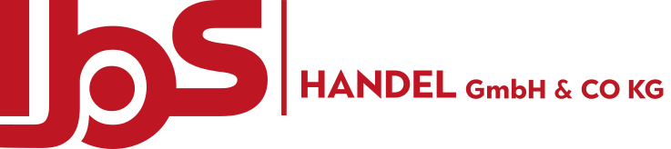
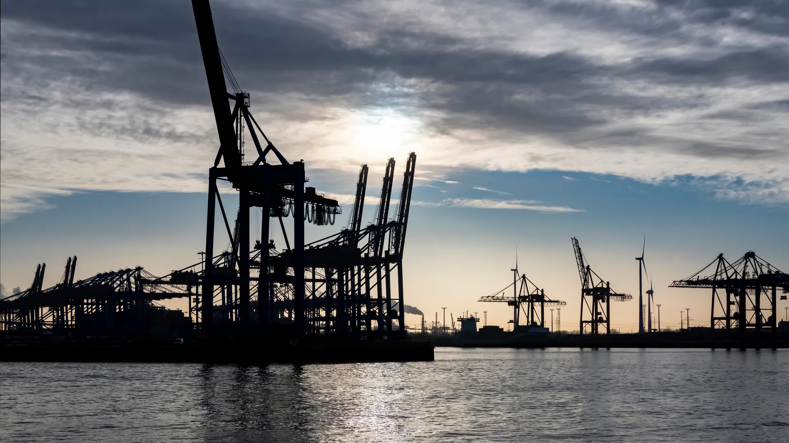
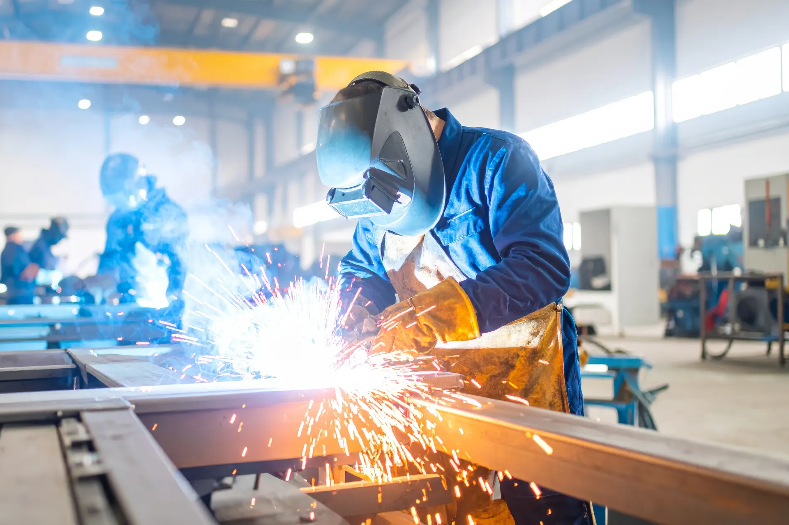
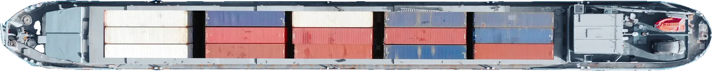
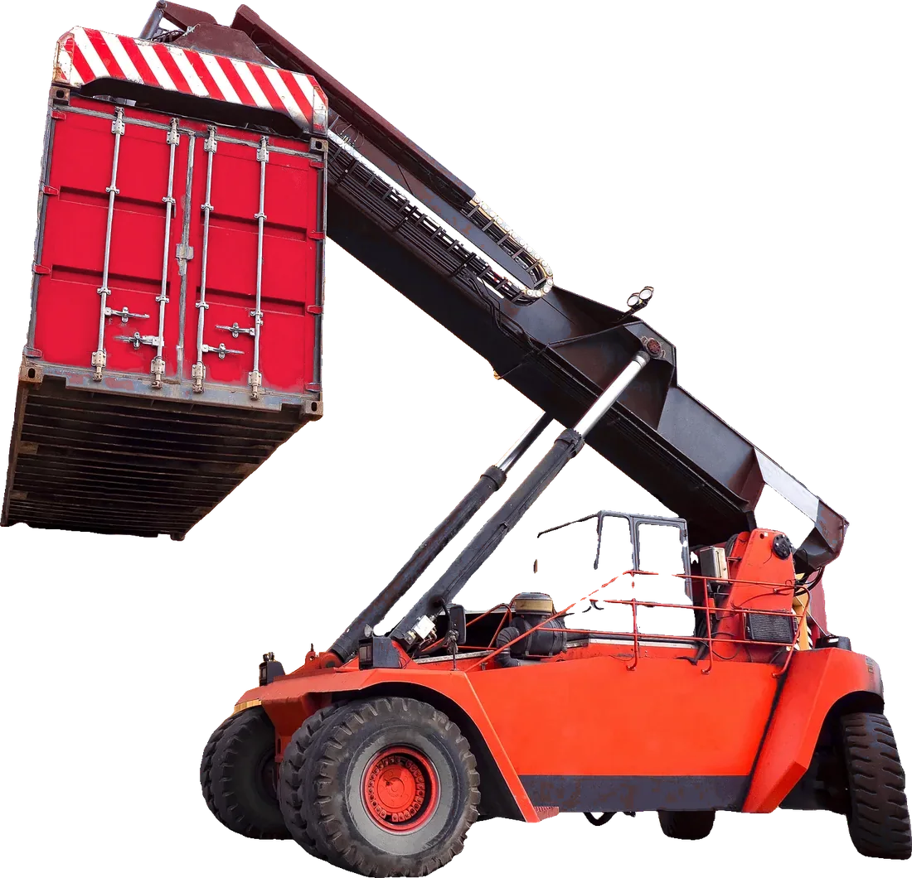
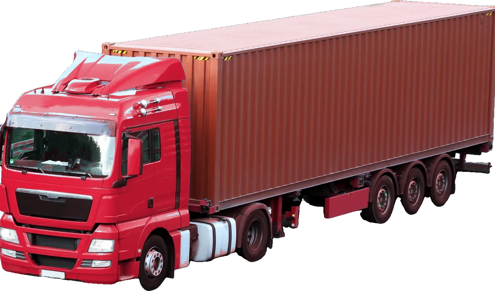

Anfrage senden
In Großmengen aus eigener Fertigung — bei gleichbleibender, CE-zertifizierter Qualität. Dazu liefern wir Holz-Mehrschichtplatten, Bindedraht und Bindedrahtmäuse, Schalungen und Hüllwellrohre, container- und palettenweise.

Gegründet von den Brüdern Simsek: Ismet bringt jahrelange Erfahrung als Bauleiter mit, Sait das Marketing-Know-how. Mit eigenen Produktionsstraßen und einem starken Netzwerk internationaler Partner kaufen wir in Großmengen zu Bestpreisen — und geben den Vorteil direkt an Sie weiter.
Bis zu 40 % günstiger bei gleichbleibender Qualität — dank starkem Netzwerk, Sonderkonditionen und eigenen Produktionsstraßen.
Unser höchstes Ziel: das Bauen erleichtern. Mit Handschlagqualität und Bodenständigkeit.
Als Männer vom Fach wissen wir, wie wir Sie in Ihrem Bauprojekt tatsächlich unterstützen.



Betonfertigteil-Werke, Eisenbindereien, Hochbaufirmen — wir liefern die spezifischen Produkte, die Sie in Großmengen brauchen. Fertigung, Verschiffung, Verzollung, Zustellung: ein Ansprechpartner für den ganzen Weg.
Wir kaufen nicht zu, wir liefern aus eigener Kette. Vom Werk bis zur Abladestelle bleibt alles in einer Hand — und aus dem Herzen Vorarlbergs bedienen wir das gesamte Vierländereck zu Deutschland, Liechtenstein und der Schweiz.
Großhandel, ausschließlich in Großmengen: container- und palettenweise für Betonfertigteil-Werke, Eisenbindereien und Hochbaufirmen. Alle Produkte CE-zertifiziert, nach internationalen Schweißnormen, in Vorarlberg qualitätsgeprüft.
Verbindungen für Betonfertigteile aus eigener Fertigung — CE-zertifiziert, auf Wunsch nach Maß.
Holz-Mehrschichtplatten für Schalung und Ausbau — formstabil, in gängigen Formaten.
Geglühter Bindedraht und Bindedrahtmäuse für die Bewehrung — palettenweise.
Schalungssysteme und Zubehör für Wand und Decke — abgestimmt auf die Platten im Sortiment.
Hüllwellrohre für den Spannbeton — sauber gewickelt, in allen gängigen Durchmessern.
Stahl und Aluminium nach Zeichnung, in Großmengen — und wenn ein Produkt nicht mehr hergestellt wird oder zu teuer ist, finden wir gleichwertigen Ersatz.
Wir kaufen in Großmengen und haben einen guten Draht zu unseren Partnern — den Preisvorteil bekommen Sie.
Eigene Produktionsstraßen: unabhängig, flexibel und schnell bei Sonderanfertigungen — CE-zertifiziert.
Wird ein Bauprodukt nicht mehr hergestellt oder ist das Original zu teuer, finden wir gleichwertigen Ersatz.
Container, Verzollung, LKW: Wir übernehmen den ganzen Weg bis zur Abladestelle.
Ob klassische Baustoff-Ausstattung für Ihre Baustelle oder Metall-Sonderanfertigung: Schicken Sie uns Ihre Stückliste oder Zeichnung — Sie bekommen ein konkretes Angebot mit Preis und Lieferzeit. Wir schauen gerne bei Ihnen vor Ort vorbei oder laden Sie in unser Büro in Meiningen ein.